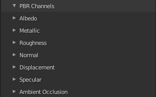
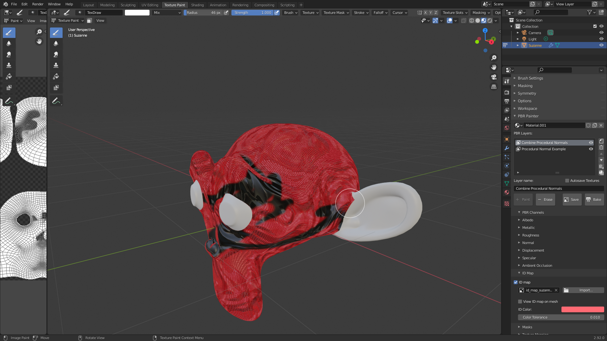
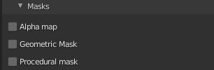
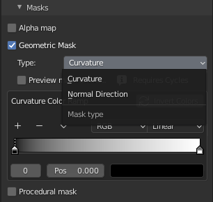
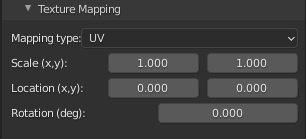

UI Subpanels
PBR Channels
This panel will contain different options, depending on whether the selected layer is a multipass or single pass layer.
Multipass Layer
With a multipass layer selected, you will first see the following interface:

Here you can select which of these channels you want to include in the multipass setup for the layer. Any channels that are not selected here will have an opacity of 0 for the layer. In other words, they will be given the value of whatever is underneath the painted area on the mesh.
The following shows all of the channels switched on, for demonstration purposes:
For the albedo channel, you can either paint directly using the color of the brush or select use constant albedo, which will apply a constant color over the painter area for the layer, which you can then adjust. For the metallic, roughness, normals, specular and height channels, you can select a single value that will be applied over the painted area. For the height channel, you can also adjust the height scale and midlevel.
You can also adjust the opacity of each of these layers individually. An opacity of 0 is identical to not including the channel at all, and an opacity of 1 is completely opaque.
If ambient occlusion (AO) is selected, you will immediately be prompted to select a texture for the channel. You can also change the AO strength here.
You can also opt to import a map/texture for each channel, using the use channel map checkbox. This will then let you add a texture to use for painting within that channel. For example, selecting use albedo map shows the following:
If you use a normal map/texture, you will also see a new checkbox appear next to opacity, called Combine normals:

If selected, combine normals will automatically combine the normals of the current layer with any normals underneath. The method used is mathematically-derived, so can be applied for multiple stacked layers to combine all normals accurately. Refer to the instructional video for a demonstration on painting with combined normals.
The following shows an example PBR Channels subpanel setup using a multipass layer, whereby a set of granite rock textures have been imported for painting onto a Suzanne head:

And below is an example setup for painting moss on top of the granite rock layer, using combined normals and a low height opacity:
Single Pass Layer
A single pass layer lets you paint individual PBR channels one at a time, much like how Blender's internal texture painting system works. However, the main difference is that the single pass layer is embedded within PBR Painter, and therefore works within the layer-based system. Additional options are also available (e.g. combine normals).
Also, by default new images will have an alpha value of 0 everywhere, so that they don't cover up underlying layers. As you paint, only the painted areas will show on the texture.
When you select a channel, you will be prompted to first select which cannel you wish to paint:
Then, you will be prompted to create a new image (or open a previous image) in order to start painting:

Once you have an image created/loaded, you can start painting a texture for that channel. You can use all of the tools you will be familiar with to do this, such as texture masks, stencils etc.
When you are happy with a channel, you can switch to another and repeat these steps, until all channels have been painted.
An important application of this, which is covered in the instructional video, is painting over seams, which can be obvious if painting textures onto a mesh with a multipass layer.
Once you are happy with your imported maps and/or values for other PBR components, this panel can be closed to clean up the UI.
Now, you are ready to check out the ID Map panel.
ID Map
As the name suggests, this panel is for importing and using an ID map for the material:
If you are not familiar with ID maps, they are essentially color-coded maps representing different regions in the material. Using an ID map lets you paint only on a specific region at a given time.
Once an ID map has been opened/imported, you will see the following options:

Click View ID map on mesh to see the map on the mesh, then select the ID Color of the region you wish to work with, using the eyedropper tool:
With the color selected, you can increase the color threshold value if there is an issue with the color matching, or if you want to include similar colors in your selection.
Once the ID map is applied and the color selected, with the appropriate threshold, painting will be restricted to only that region, e.g.:

Note that once an ID map has been opened/imported for any layer, it will be applied for every other layer automatically (once ID map is selected).
The next panel to check out is the masks panel, where you can add a variety of different masks to use for the layer.
Masks
In this subpanel, you can add a alpha map and/or procedural mask to the texture:

In the example below, a 'logo' alpha map has been used to paint rock over the top of a dirt background:

It is important to recognize that an alpha map can be any greyscale image, meaning that it is easy to make your own.
If you select procedural mask, you will have the option of either a curvature mask or a normal direction mask:

Note that other options will be added with future versions of PBR Painter.
As for the ID map, you can visualize these masks on the mesh with the checkbox shown, and you can adjust them as needed using the colorramp properties and/or the normal direction interactive tool (for normal direction only):
Note that any masks used will be combined/multiplied (and also multiplied with the ID map, if used). This gives fine control over different combinations of masks.
Texture Mapping
This panel allows you to change the scale, location (in the x and y directions) and the rotation of any imported PBR texture maps:

Note that if no maps are imported you will be prompted that this panel is not applicable.
Play around with these values to get the mapping that works for you, then you are ready to check out the panel you will probably use most often: the Layer Settings panel.
If you have an alpha map loaded, you will also see the option to use separate mapping for the alpha map:
This is useful if you don't want your alpha map to be mapped in the same way as your imported textures for the material.
Other Principled BSDF Inputs
Here you will find all of the other inputs to the Principled Shader, which can be modified as necessary. Note that you can also change the opacities of each input for the layer, as per the previous section. Note also that this subpanel is only available for a multipass layer.
In many cases, these values can remain unchanged, however there are certain materials that will require them to be modified. Note that selecting any channel will trigger the Merge Visible function to bake that value as an individual map, as is explained later.
Deleted Layers
Finally, the last panel, the Deleted Layers lets you recover up to 10 deleted layers and return them to the active layers list. This is useful if you change your mind or accidentally delete a layer and wish to recover it at a later point. Alternatively, layers can be permanently deleted from this panel, at which point they can no longer be recovered.